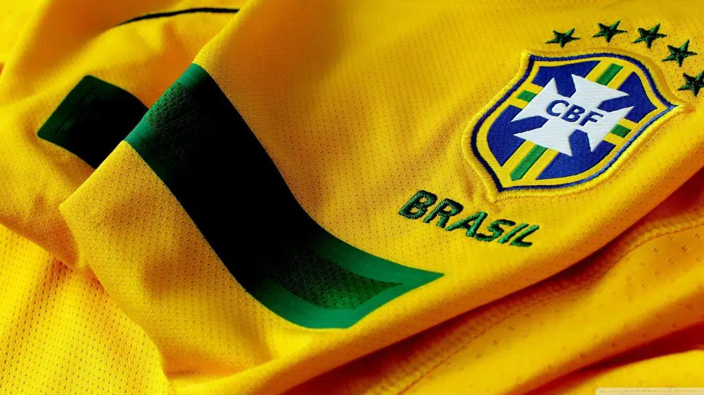

Seleção Brasileira
Única pentacampeã de futebol do mundo, a Seleção Brasileira tem uma história oficial de mais de cem anos de conquistas importantes

Oficialmente, a Seleção Brasileira de futebol surgiu em 1914, na mesma época em que também surgia a Confederação Brasileira de Futebol (CBF). Desde então, é uma das seleções de maior destaque internacional, sendo a única a acumular cinco campeonatos mundias e participação em todas as Copas organizadas. Entre 1958 e 1970, a Seleção Brasileira viveu uma verdadeira Era de Ouro, conquistando seus três primeiros títulos. Desde então, passou por diferentes fases, com destaque para as esquipes que conquistaram títulos em 94 e 2002.
História da Seleção Brasileira
Antes de 1914, houve uma fase de pré-seleção de jogadores brasileiros. Nessa época, eram normal que seleções formadas por jogadores escolhidos de clubes enfrentassem times de países vizinhos. No Brasil, essa fase teve início em 1906 e chegou ao fim com a criação oficial da Seleção. Em 21 de julho de 1914, então, a Seleção Brasileira fez seu primeiro jogo oficial, contra o Exeter City, da Inglaterra. A partida aconteceu no estádio do Fluminense e terminou com a vitória brasileira por 2 a 0. Apesar disso, alguns jornais ingleses anunciaram o jogo como empate. Já o primeiro título veio a acontecer dois meses depois, na disputa da Copa Rocca contra a Argentina. Mas só cinco anos mais tarde, o primeiro título de maior relevância, no Campeonato Sul-Americano. Na ocasião, o Brasil bateu o Uruguai e se sagrou campeão.